How we will build the AI Customer Support Platform
Product Goal, backlog, Sprints, and what "done" means. Press → to start.
Space or arrows to move · Esc for overview · S for speaker notes · F for full screen · I for all decks
The one sentence everything serves
Product Goal
A customer can contact an organization through website chat, receive accurate knowledge-grounded answers, complete at least one authorized read-only business lookup, and reach a human without losing context.
The architecture must be ready to add voice without duplicating business reasoning.
Fit
Why Scrum suits this product
AI behaviour is uncertain
We cannot predict answer quality on paper. Each Sprint ends with a demo and an evaluation run, so we inspect real behaviour.
Vendors drive risk
Voice and business integrations depend on provider limits and credentials. Short Sprints and spikes expose that early.
Security is not a phase
Tenant isolation, authorization and privacy are inside every Definition of Done, not a final checkpoint.
Accountabilities
Three accountabilities, one team
Product Owner
Product value and Product Goal
Orders the Product Backlog
Accepts Sprint results
Scrum Master
Coaches Scrum
Removes impediments
Helps the team improve
Developers
Cross-functional team
Design, build, test, integrate
Secure and operate the Increment
Stakeholders: support teams, organization admins, customers, security and privacy, business-system owners. Roles may be held by a small team, but the accountabilities stay clear.
How work flows
Refine the Product Backlog all the time
Plan a Sprint: one Sprint Goal, selected items
Build until each item meets the Definition of Done
Review the Increment with stakeholders, feed learning back into the backlog
Retrospect and carry improvement actions into the next Sprint

Two-week Sprints
The rhythm of a Sprint
Sprint PlanningPick a Sprint Goal and backlog items
Daily Scrum15 minutes, inspect and adapt
Build to DoneDesign, code, test, secure
Sprint ReviewDemo working software
RetrospectiveOne or two real improvements
Refinement runs all the time: split, clarify, reorder and estimate upcoming work. It is not a formal event.
43 user stories
Twelve epics
E01 Tenant and access3 stories
E02 Conversation core4 stories
E03 Website chat3 stories
E04 Knowledge and RAG4 stories
E05 AI orchestration4 stories
E06 Safe business tools4 stories
E07 Human handoff4 stories
E08 Tickets2 stories
E09 Voice MVP5 stories · Release 2
E10 Workflow, routing, SLA3 stories · Release 3
E11 Integrations and channels3 stories · Release 3
E12 Observability, evaluation, usage4 stories
Blue = Release 1 (text MVP) · Amber = Release 2 (voice) · Green = Release 3 (operations)
What depends on what

Tenant and access come first. AI orchestration needs conversation core and knowledge.
Suggested order, reorder with evidence
What we build first
Tenant and access foundation
Conversation core
Website chat
Minimum observability and security, in parallel
Knowledge ingestion and RAG
AI orchestration
One safe read-only business tool
Human handoff
Ticket basics
Voice
Workflows, routing, SLA
More connectors and channels, advanced evaluation
Order changes with user research, risk, technical dependencies and Sprint Review feedback.
Three releases
Where the Sprints lead
Release 1
Text support MVP
Tenant foundation, website chat, grounded answers, one read-only tool, human handoff, tickets, audit and telemetry.
Release 2
Voice MVP
Real-time browser voice on the same engine, speech processing, transcript sync, interruption and voice handoff.
Release 3
Operations expansion
More channels, workflow automation, routing and SLA, connectors, stronger evaluation, usage controls.
Part two
The Sprint plan
Nine Sprints, each ending with a usable Increment and a demo.
A planning hypothesis, reforecast after Sprint 1
Nine Sprints at a glance
Enablebuild, test, deploy safely
Foundationtenant-scoped conversation
Chat slicereliable website chat
Knowledgeingest and retrieve
AI answersgrounded, with fallback
Tool + handofflookup and human
Hardentickets, gates → R1
Voice sliceone spoken turn
Voice syncinterrupt, switch → R2
Sprint 0 only if needed, and never a permanent phase. Security, observability and tests ship inside every Sprint.
Sprints 1 and 2 · Secure foundation and website chat
Sprint 1
Goal: a tenant-scoped conversation and message can be created, persisted and retrieved.
US-001 Organization foundation
US-003 Tenant isolation tests
US-010 Conversation creation
US-011 Message persistence
Demo: create, append, fetch timeline, prove cross-tenant access is denied.
Sprint 2
Goal: a visitor exchanges text messages with the backend reliably.
US-020 Widget configuration
US-021 Chat session
US-022 Reconnect and resume
US-013 Inbound deduplication
Demo: send a message, see it persisted and returned, replay a duplicate, drop the network.
Sprints 3 and 4 · Knowledge and grounded answers
Sprint 3
Goal: organization knowledge is ingested and retrieved within tenant boundaries.
US-030 Source registration and upload
US-031 Async parse, chunk and index
US-032 Retrieval with source metadata
Ingestion status and retry
Demo: upload a document, watch status, query it, see source references.
Sprint 4
Goal: chat answers common questions from approved knowledge and handles missing evidence safely.